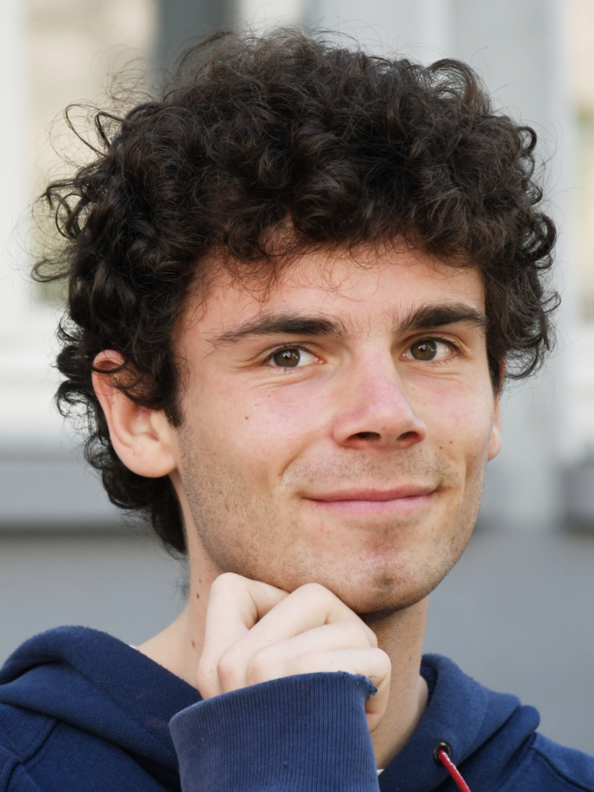

©Jan Malte Röhm

Jan Malte Röhm (2002, Germany) is a photographer working with the threat of war in Europe and the interplay between architecture, nature and society. He preferably works in long term projects creating fragmented narratives that float between documentary and fiction. Currently he is based in Rotterdam, the Netherlands.
The topic of war in Europe is an overarching theme in his latest projects. “Werden wir fliegen wie ein Phoenix // Will we fly like a Phoenix” (2023) deals with Rotterdam's scars left by the destruction through Nazi-Germany and how the city has reshaped since then through meditative images of architecture and young people. “Common Ground” (ongoing) addresses the current uncertainty in Europe regarding a future of possible war and certain environmental devastation through landscape images. “Dance before the War” is his most current project. The project explores his position towards military and armament with the ongoing war Ukraine and possibility of war in Europe through portraits of young soldiers, documentary photographs, news and social media images and a performance piece.
His projects aim to offer space for reflection, inspire conversations and negotiate between polarized opinions.